Quelques stratégies
Notation
Les lignes du plateau sont indexées par des nombres et les colonnes par des lettres. Les hexagones individuels sont désignés par l'indice de la colonne suivi de l'indice de la ligne, par exemple l'hexagone c2 est celui de la colonne c, ligne 2. Dans cette implémentation du jeu Hex, les pièces rouges appartiennent au joueur "vertical", et les pièces bleues au joueur "horizontal". Un exemple de plateau 4x4 est donné ci-dessous.
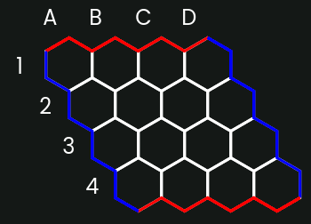Le pont à deux voies
La formation constituée de deux pièces non adjacentes mais ayant en commun deux hexagones voisins vides est appelée pont à deux voies, par exemple les pièces sur b2 et c3, et les hexagones vides b3 et c2 dans le diagramme suivant forment un pont à deux voies.
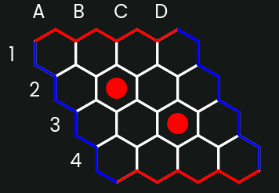Les deux pièces sont étroitement liées, presque comme une chaîne solide allant de b2 à c3. L'adversaire peut essayer de rompre cette connexion en jouant une pièce soit en b3 soit en c2. Cependant, peu importe le choix de l'adversaire, vous pouvez jouer l'autre pièce et rétablir le lien. En général, on peut considérer que les deux pièces du pont sont déjà connectées. En reliant les pièces via ces ponts à deux, vous pouvez étendre votre influence sur le plateau deux fois plus rapidement que si vous jouiez sur des hexagones adjacents.
Les pièces dans une chaîne de deux sont connectées, mais parfois une chaîne de deux peut être rompue en jouant une pièce au milieu de la chaîne qui contient une autre menace qui doit être immédiatement contrée. Après que l'adversaire ai répondu la menace, vous pouvez alors jouer dans l'autre hexagone de la chaîne de deux, rompant ainsi la connexion. De plus, jouer au milieu d'une chaîne de deux peut être une bonne stratégie même lorsque l'adversaire devrait et répond effectivement en préservant la liaison. La raison en est que la pièce jouée peut s'avérer utile ultérieurement.
Blocage
Lorsque vous n'avez aucune pièce dans une zone, il est généralement préférable de commencer par bloquer de manière étendue, près d'au moins l'un de vos côtés, et pas trop près de la pièce de l'adversaire. Si votre mouvement de blocage a une influence insuffisante sur vos deux côtés, alors l'adversaire a au moins deux bonnes zones du plateau qui valent la peine d'être exploitées, une pour chaque côté. Par exemple, comparez la situation de la pièce bleue dans ces deux cas.
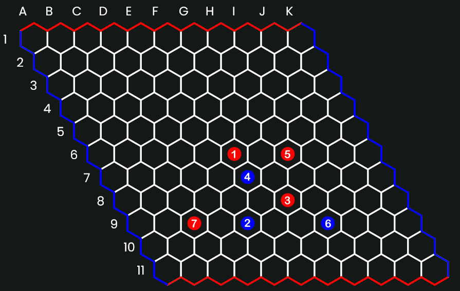Dans ce cas, les pièces initiales bleues (E9 et F7) ont très peu d'influence sur les deux bords bleus et ne constituent donc pas une menace immédiate pour le bas. Bleu n'a pas d'autre choix que de jouer D8, qui est cependant encore loin d'être connecté à un bord bleu.
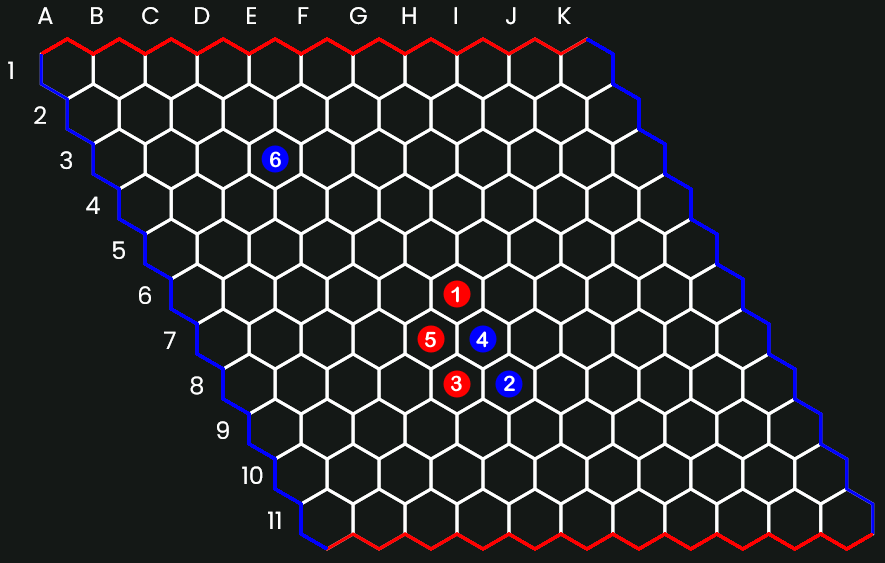Cette position, en revanche, est beaucoup plus délicate à jouer correctement pour le rouge que la première. Bleu est encore trop concentré (inévitablement, étant donné la position faible) sur le bas mais, après avoir obtenu une influence raisonnable sur le côté droit, il peut maintenant concentrer ses efforts sur le côté gauche de du plateau.
Si vous bloquez trop près de l'adversaire, il peut simplement contourner la tentative de blocage. Par exemple, supposons que vous essayez d'empêcher le joueur vertical de se connecter au bas dans le diagramme suivant.
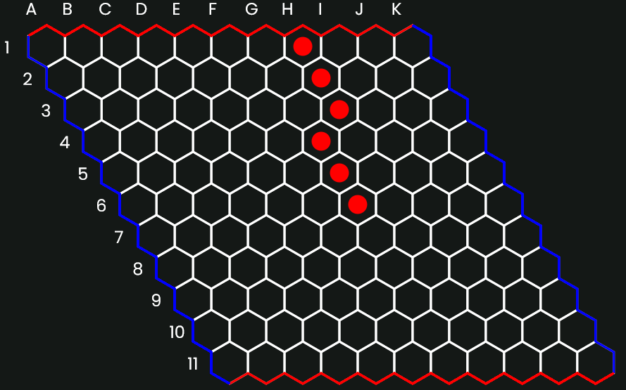Si vous essayez de bloquer en jouant à côté de la pièce de tête, par exemple en jouant en g7, le joueur vertical peut simplement la contourner en f7 (voir le diagramme ci-dessous). Ensuite, la tentative de blocage à e8, par exemple, peut être contrée de la même manière en jouant à f8. Manifestement, vous ne faites aucun progrès ici.
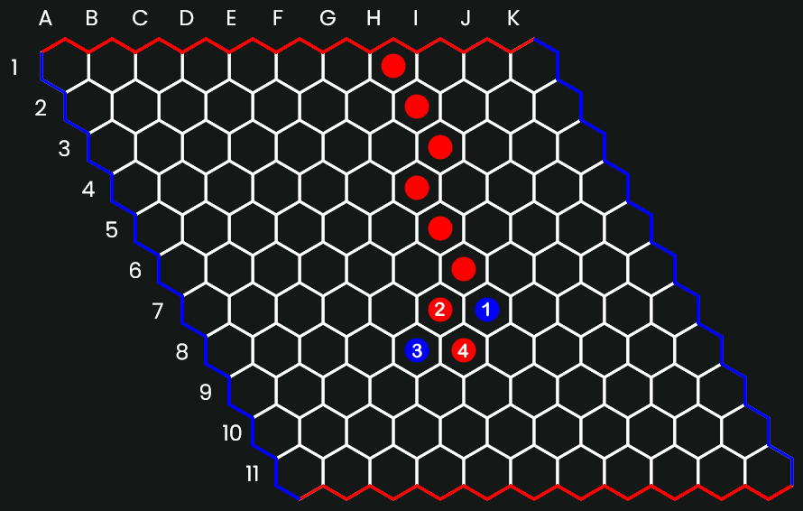Une autre tentative à partir de la position initiale serait de bloquer à une distance de deux chaînes à f8 (voir le diagramme ci-dessous). C'est mieux que le bloc adjacent, mais l'adversaire peut parfois contourner ce problème en jouant deux chaînes à un angle, par exemple en jouant h7 en réponse à f8 (h7 doit être contré par h8 ou g9).
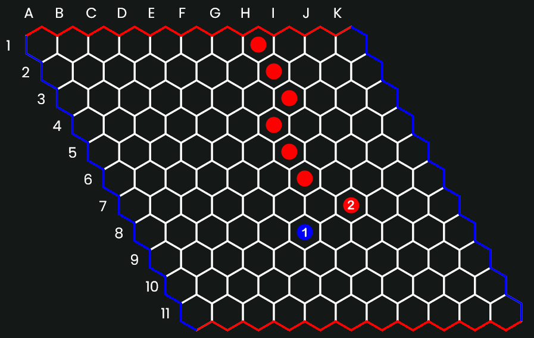Une autre possibilité consiste à combiner les deux idées ci-dessus en effectuant d'abord un blocage adjacent en g7, puis, si le joueur vertical répond par f7, vous bloquez à une distance de deux chaînes en e9. Votre adversaire ne peut alors pas faire de double chaîne vers la droite à cause de la pièce g7 initiale.
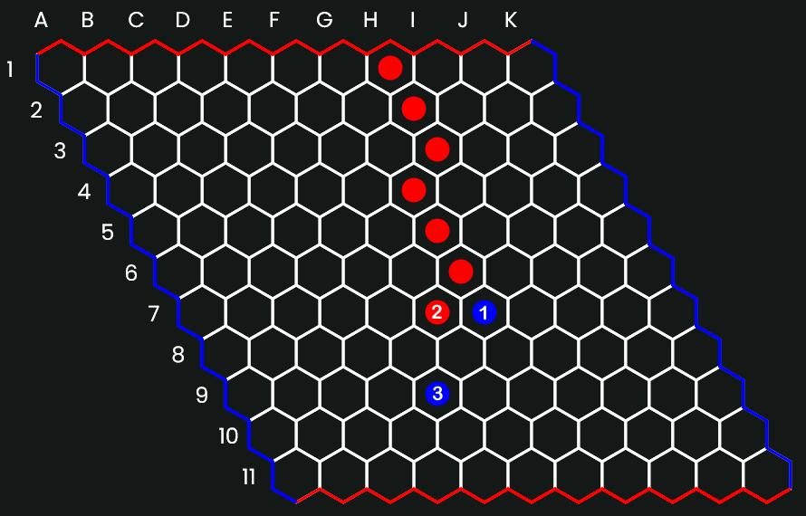Un bon blocage dans la position d'origine consiste à bloquer un hexagone plus loin que le bloc à deux chaînes en e9 ou f9 (on parle parfois de bloc classique). Par exemple, supposons que H bloque en f9 (voir diagramme ci-dessous). La double chaîne en f8 est rencontrée par e9. La double chaîne en bas à droite (h7) est rencontrée par h8 et la double chaîne en bas à gauche (e7) est rencontrée par d8. En bloquant à distance, vous disposez d'un ou deux coups avant que la tête qui avance n'atteigne les pièces bloquées. Notez que lorsque la taille de l'échiquier est inférieure à 11 x 11, le blocage classique est beaucoup moins utile en raison du manque d'espace.
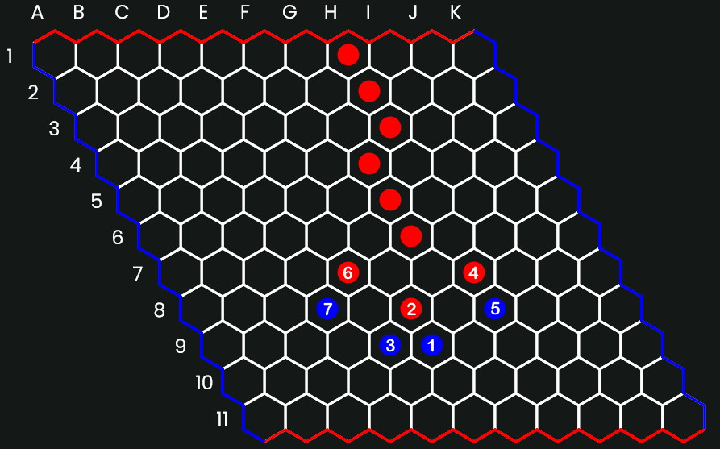Supposons que Rouge ouvre avec G4 et que Bleu joue E6, ce qui donne ce qui suit.
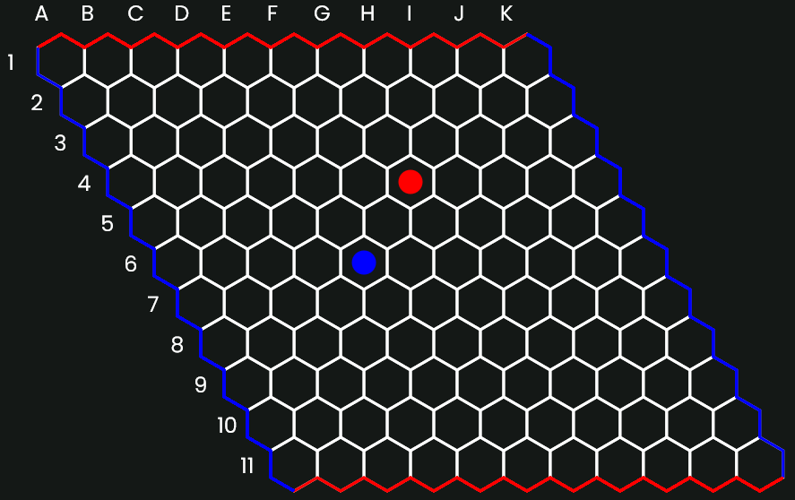Le jeu de Bleu est ce que j'appelle un blocage indirect ; il ne bloque pas directement le G4 Rouge par le bas, mais il menace de le bloquer au prochain coup. Rouge ne peut pas se permettre d'ignorer cette menace. Si, par exemple, Rouge joue G3, Bleu répond avec G5 en coupant complètement les pièces de Rouge par le bas.
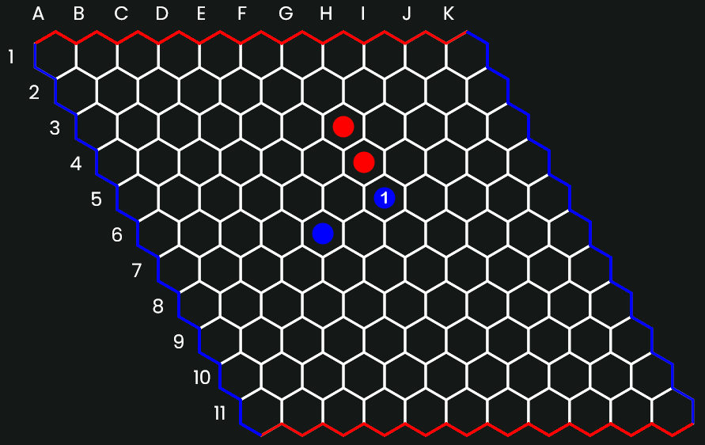Au lieu de cela, Rouge peut jouer vers le bas avec F6 et Bleu peut compléter son bloc en jouant E8 par exemple.
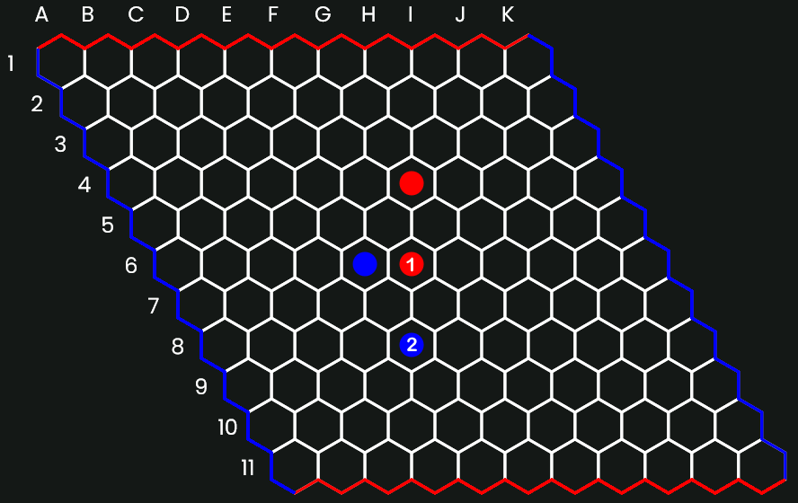Résumé du blocage
La chose la plus importante à faire pour un débutant est d'éviter l'erreur d'essayer de bloquer à plusieurs reprises en jouant à côté de la tête de la chaîne, comme indiqué dans le premier exemple. Jouer devant la chaîne comme dans le blocage classique vous donne un ou deux coups pour placer vos pièces avant que la chaîne qui avance ne rencontre vos pièces.
Principes généraux
Une position est aussi bonne que son maillon le plus faible
Ainsi, à chaque coup, vous devez essayer soit d'améliorer votre maillon le plus faible, soit de rendre le maillon le plus faible de votre adversaire encore plus faible. Un coup qui fait les deux est un coup fort. Par exemple, dans la position ci-dessous, l'hexagone f6 est le point le plus faible de la meilleure connexion des Rouges sur l'ensemble de l'échiquier. C'est également le maillon le plus faible de la meilleure connexion des Bleus sur l'échiquier. Par conséquent, le joueur dont c'est le tour de jouer serait bien avisé de jouer en f6. En fait, celui qui joue ensuite a une victoire forcée après avoir joué f6.
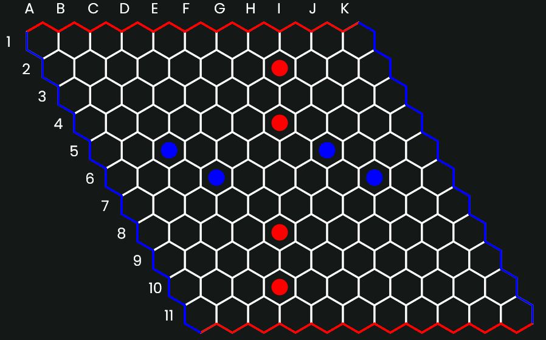L'attaque égale la défense
Dans Hex, une bonne attaque et une bonne défense sont tout à fait équivalentes. Si vous réalisez une connexion entre vos camps, alors votre adversaire est empêché de réaliser la sienne. Inversement, si votre adversaire est empêché de terminer une connexion, vous devez avoir terminé la vôtre (les égalités ne peuvent pas se produire dans Hex). En outre, la seule façon d'achever une connexion est d'empêcher votre adversaire d'établir une connexion et la seule façon d'empêcher votre adversaire d'établir une connexion est d'achever la vôtre. Dans un sens très concret, vous n'avez pas à vous soucier de savoir si vous devez jouer de manière offensive ou défensive, puisque c'est la même chose. Ce qu'il faut retenir, c'est qu'à moins que vous ne fassiez une séquence de jeux forcés, il est généralement plus facile de penser en termes de bonne défense qu'en termes de bonne attaque, que vous soyez en train de gagner ou de perdre. Ce point sur la pensée défensive devrait souvent être utilisé avec le point ci-dessus. Il est souvent préférable de rechercher le lien que votre adversaire aura le plus de mal à établir (point ci-dessus). Par exemple, supposons que la connexion la plus difficile à réaliser pour mon adversaire soit la connexion avec le bord droit de la planche. Je chercherai alors de bons mouvements défensifs qui rendront encore plus difficile la connexion de mon adversaire vers le bord droit.
Momentum
On dit que c'est le joueur qui dicte le jeu qui a le vent en poupe. Dans le cas contraire, le momentum est contre le joueur qui est obligé de répondre à l'adversaire. Le joueur qui a le momentum a généralement l'avantage et cet avantage est souvent décisif. En règle générale, il ne faut pas céder le momentum à l'adversaire à moins d'avoir une très bonne raison de le faire. Dans les matchs serrés bien joués, la dynamique oscille souvent entre les deux joueurs à chaque coup.
Menaces multiples par coup
Dans la mesure du possible, un joueur doit faire en sorte que chaque coup atteigne au moins deux objectifs ou menaces différents. Les coups qui ne contiennent qu'une seule menace ne sont généralement pas difficiles à réaliser. Si un coup contient plusieurs menaces, l'adversaire peut ne pas être en mesure d'arrêter toutes les menaces avec un seul coup.
Le centre
La région centrale du plateau est stratégiquement la plus importante. À partir du centre, les connexions peuvent s'étendre dans de nombreuses directions, ce qui vous donne plus de flexibilité et d'options que si vous partez d'un bord. De plus, les pièces jouées au centre sont plus proches des deux bords, ce qui est lié au point sur l'amélioration du maillon le plus faible. Plus la distance entre deux pièces est grande, plus il est difficile de les relier, c'est-à-dire que leur lien potentiel est plus faible.
L'ouverture
Sans la règle du swap, le coup initial serait facile. Jouer dans l'hexagone central est le meilleur coup d'ouverture. Le coup d'ouverture le plus faible consiste à jouer dans l'un des angles aigus (a1 et l'angle opposé) et c'est l'un des deux seuls coups d'ouverture qui sont une perte avérée (sans l'option de permutation).